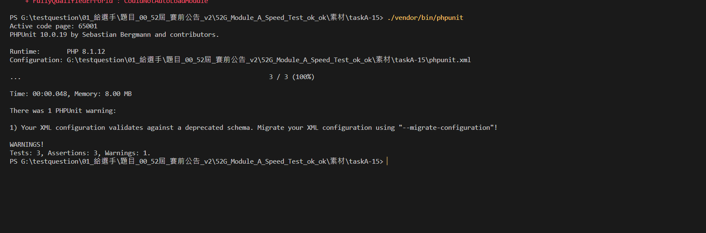

解題步驟
1.安裝 phpunit
首先在專案中使用 composer 安裝 PHPUnit
composer require --dev phpunit/phpunit
2.安裝 php-xdebug
如果要能夠看到測試的 Code Coverage 就還需要安裝 php-xdebug
pecl install xdebug
3. phpunit.xml
4. 輸入 ./vendor/bin/phpunit
5. 完成
6. 參考資料:
https://xenby.com/b/305-%E6%95%99%E5%AD%B8-%E5%A6%82%E4%BD%95%E4%BD%BF%E7%94%A8-phpunit-%E9%80%B2%E8%A1%8C%E6%B8%AC%E8%A9%A6%E8%88%87-mock-function